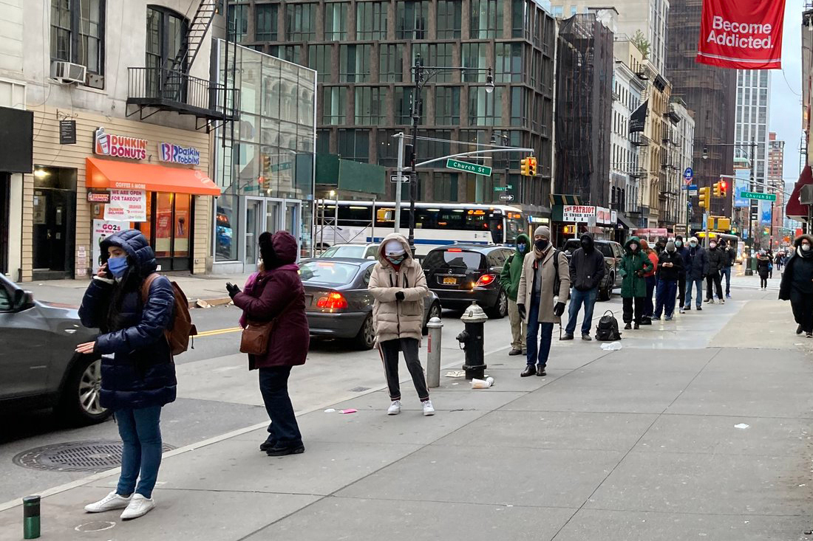

Homework 1: NYC, ‘20
OIDD 245 Tambe
|  |  |
Due Dates and other details
This assignment should be submitted through Canvas.
You may NOT work with others on this assignment. However, you can ask the TAs or instructor for help as needed. If using Slack, direct message us rather than posting to a public channel. Try NOT to put this assignment off until very close to the due date. These data sets are large, and it can sometimes take more time than you might anticipate to work through them.
This is a good assignment on which to use R scripts or R notebooks, and a good opportunity to learn about them if you have not been using them already. You should complete the entire assignment using either R scripts or an R notebook. If you use an R-script, please also create a separate document (which you should ultimately convert to a pdf) that includes answers to the questions that being asked, including any relevant charts, and submit both documents to Canvas.
If you are using an R notebook, you
can try to knit the notebook to create a Word
document (which you should convert to a pdf) or .html file that you can
submit along with your R notebook. A common problem when starting out with R notebooks is ensuring your R notebook is pointing at the right directory in every code chunk. If you are running into this problem, you can find a primer on the topic with tips on how to deal with it here.
You are encouraged to use any and all R packages that you think might be useful for completing this assignment, even if we have not covered them in class (e.g. dplyr, tidyr, lubridate).
Data Context
2020 in NYC was characterized by upheaval, due to the COVID-19 pandemic, the George Floyd protests (and the protests that followed), and other factors.
These events have had implications for all facets of New York life, from real estate prices to the local wildlife. Changes are occurring in many cities, of course, but we will use data from NYC, simply because it collects and publishes particularly good city data through their open data initiatives.
For this assignment, in addition to i) health data, we will use data on ii) police reports and iii) a data set on NYC 311 calls, which are a fascinating source of information on New York City.
Deliverables
There are two deliverables for this assignment. You should submit an
R-script or R-notebook with the R code that you used to complete the
project. You should also knit the output of an R notebook into a report in
.html or Word format or if using an R-script, create a Word document with your
answers and supporting figures that you convert into a .pdf file before submitting. The R files should be well-documented with comments so that it is clear what you are trying to do.
You will NOT be graded on the efficiency of your code or how nice it looks. However, this project is an opportunity to spend a few extra minutes to think about how to keep your code organized to make your life easier. This includes choosing good variable and file names, which will ultimately save you time in a project such as this one. A key learning objective of this homework is gaining experience building and managing a larger R-based project.
Data sources
You will need the following three data sources to complete this homework. These data sources are all available through NYC Open Data, but are also made available through the following links. For the 311 data, please use the link below and not the NYC Open data, because the link points to a much smaller extract created for this assignment (limited in date range) that will be easier to work with.
- NYC COVID cases through Dec 2020 (33.5 KB)
- 2020 data from the NYPD on crime activity (28.3 MB)
- 311 call data from October through December of 2020 (459.4 MB)
Objectives
PART 1. Descriptive Statistics and Figures.
a. Using only the data on COVID cases, create a chart illustrating the 7 day averages for Covid cases for each day (note, the 7 day average is already recorded in the data, you do not have to compute it). The lubridate and zoo packages in R are particularly useful for working with dates. stringr can help when working with strings.
b. Create a chart that illustrates this trend line for EACH of the five NYC boroughs. You can create one line chart with a different line for each borough (in different colors or patterns), or you can create five different line charts, one for each borough. For reference, in these data:
- BK = Brooklyn
- QN = Queens
- MN = Manhattan
- SI = Staten Island
- BX = Bronx
PART 2. NYPD data.
a. Using the NYC Arrest data, generate a chart indicating total arrest numbers for each day, and add two markers to the chart (e.g. vertical lines) indicating 1) the beginning of the COVID related shutdowns (which began on Mar 13th) and 2) the George Floyd protests (which began on May 26th).
b. Create a table that, for only the arrests that took place in 2020, summarizes arrests by borough and age group. The table should look something like this.
| BORO | 18-14 | 25-44 | 45-64 | 65+ | <18 |
|---|---|---|---|---|---|
| BROOKLYN | # Counts | # Counts | # Counts | # Counts | # Counts |
| QUEENS | # Counts | # Counts | # Counts | # Counts | # Counts |
| BRONX | # Counts | # Counts | # Counts | # Counts | # Counts |
| STATEN ISLAND | # Counts | # Counts | # Counts | # Counts | # Counts |
| MANHATTAN | # Counts | # Counts | # Counts | # Counts | # Counts |
In these data:
- B = Bronx
- K = Brooklyn
- M = Manhattan
- Q = Queens
- S = Staten Island
PART 3. 311 Analysis.
Now, imagine that the NYC Department of Health thinks it might be useful to use 311 calls to predict case trends. They ask you to investigate whether the 311 complaints database might be useful for predicting a future rise in case counts. Specifically, in the 311 data, we will focus on the following four types of complaints (COMPLAINT_TYPE):
- “Mass Gathering Complaint”
- “Private or Charter School Reopening”
- “NonCompliance with Phased Reopening”
- “Outdoor Dining”
We would like to use a linear regression to investigate if there is a statistically significant relationship between any of these four complaint category counts from 14 days ago and the current case count numbers. For the purposes of this assignment, we will estimate a simple linear model where each row corresponds to a borough-day combination. The value to be predicted is current case count 7 day average and the predictor variables are the 311 complaint counts from 14 days prior. Note that using the 7 day average 14 days ahead means that the predictions are for the window starting 7 days ahead and then extending onwards for a week.
The total number of rows in the data set you use for the regression should be about five times as large as the number of days, since there are five boroughs in NYC.
To answer this question, report whether you find evidence of a statistically significant relationship between any of these measures and case counts? Show your regression results and justify your answer. The specific steps you should follow are:
Step 1. From the 311 data set, generate a data set which, for each borough-day combination, contains numbers of 311 complaints for each relevant category type, transformed to the following format. If you have missing values, those should be filled in with zeroes (indicating there are no complaints of that type for that day in that borough).
| Day | Boro | Mass Gather | School Reopen | NonCompliance | Outdoor Dine |
|---|---|---|---|---|---|
| Day 1 | BROOKLYN | # Counts | # Counts | # Counts | # Counts |
| Day 1 | QUEENS | # Counts | # Counts | # Counts | # Counts |
| Day 1 | BRONX | # Counts | # Counts | # Counts | # Counts |
| Day 2 | BROOKLYN | # Counts | # Counts | # Counts | # Counts |
| Day 2 | MANHATTAN | # Counts | # Counts | # Counts | # Counts |
| … | … | … | … | … | … |
Step 2. Generate another data set which is the COVID case count 7 day average, also at the borough-day level.
Step 3. Join the 7 day case average value to the 311 complaint data from Step 1 from 14 days earlier, so that you have a data set with a row for each borough-day combination that contains total case counts for that day and 311 calls by category from 14 days in the past. Joining the two data sets should produce something like this.
| Day | Boro | 7 day case avg | Mass-14d | Reopen-14d | NonCompl-14d | OutDine-14d |
|---|---|---|---|---|---|---|
| Day 1 | BROOKLYN | # Counts | # Counts | # Counts | # Counts | # Counts |
| Day 1 | QUEENS | # Counts | # Counts | # Counts | # Counts | # Counts |
| Day 1 | BRONX | # Counts | # Counts | # Counts | # Counts | # Counts |
| Day 2 | BROOKLYN | # Counts | # Counts | # Counts | # Counts | # Counts |
| … | … | … | … | … | … | … |
Step 4. Finally, run a linear regression on the newly assembled data set to test whether any of the 14 day delayed 311 complaint categories have a statistically significant relationship with current day case count averages and whether the relationship is positive or negative.1 Because the data are dispersed, it makes sense to log the data. Logging zeroes causes problems, but adding one to all the values you are logging offsets this issue. This is such a common operation that languages like R have a command that does it all in a single step (In R it is called log1p. If you use log1p you do not need to add one - it will do it automatically.) The linear regression should take the following form where i indexes each row (borough-day combination):
log1p(7 DAY CASE AVG)i = log1p(MASS GATHERING-14d)i + log1p(SCHOOL REOPENING-14d)i +
log1p(NON COMPLIANCE-14d)i + log1p(OUTDOOR DINING-14d)i + BOROUGH + εi
BOROUGH should be included into the regression as a dummy variable (i.e. convert them to factor variables, like the one-hot encoding example from class). You should have four dummy variables in your regression output because one borough is omitted to serve as the baseline.
PART 4. Beyond open data
Provide one example of a data set you might be able to use to predict COVID activity in New York that we did NOT use here. For example, you might think about incorporating data sets on retail activity, urban transportation, housing information, demographics, or many other possibilities. You do NOT have to implement the idea, but your answer should include the following two things:
- Pointers to a specific data set you would use and the variables you would use to join it with any of the health data described above. This can be a URL link that points to a data set or you can describe how you might collect the data using web scraping or an API.
- A short description of the type of hypothetical analysis (e.g. chart, regression) you might conduct. This should be no more than a couple of sentences.
-
As you may know from other classes, because this is a count variable, there are other regression models that might be better suited here (e.g. Poisson, NBD). Linear models work well enough however, and we leave the discussion of model choice to other courses! ↩